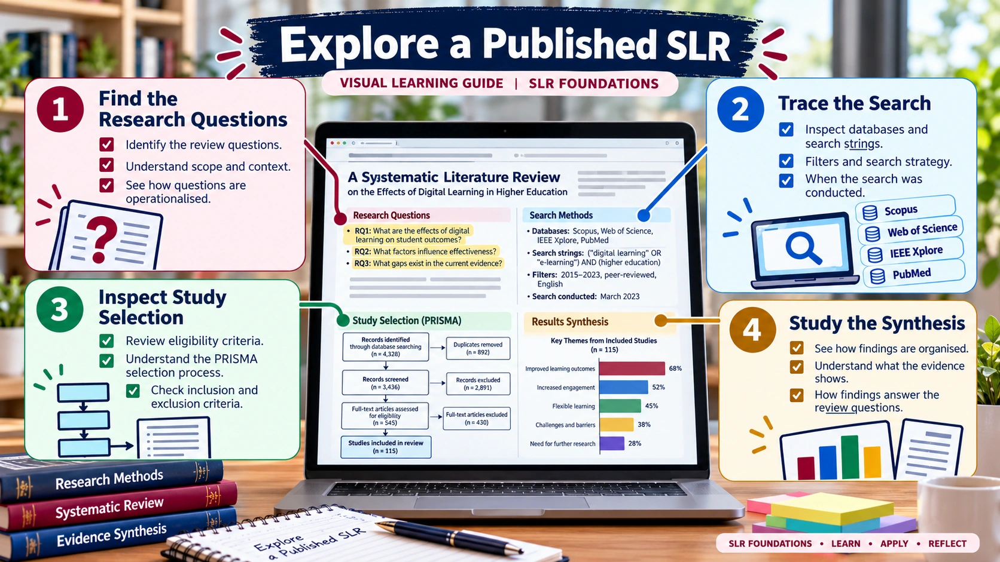

SLR FOUNDATIONS · PRE-HANDS-ON LEARNING
Interactive SLR Article Explorer
Read a published review critically, section by section.

Worked example: Testing Scientific Software — A Systematic Literature Review
Use the open-access published article as a reading example. The guidance below is a learning worksheet, not a claim that every SLR uses the same structure.
Open the article in another tab. Identify and record the exact section, page or quotation supporting each answer. Do not invent missing methodological details.
Explore the article
1. Introduction and review rationale
Locate the problem, existing review coverage, intended contribution and research questions. Ask: Why is another review necessary?
2. Review method
Find databases, complete search strings, dates, eligibility criteria, screening process and any quality appraisal. Distinguish what is reported from what you assume.
3. Results and synthesis
Identify how included studies are grouped, which results address each research question and whether findings are descriptive or interpretive.
4. Discussion and limitations
Look for interpretation, limitations, threats to validity and evidence-supported future directions.
Reading worksheet
Download the editable worksheet, complete it using the article, then compare with a second published SLR.